|
4-2-3-1
|
Croatia | 2 | - | 1 | Ghana |
4-1-4-1
|
| HT 1-0 | ||||||
|
FIFA World CupSaturday 27 June 2026
|
||||||
- Venue
- Philadelphia Stadium
- Attendance
- 68,324
- Referee
- Drew Thomas Fischer
Goal31'
P. Sučić
Assist: M. Kovačić
Substitution66'
A. Budimir
I. Matanović
Yellow card68'
I. Perišić
Substitution78'
M. Kovačić
Mario Pašalić
Goal83'
N. Vlašić
Assist: L. Modrić
- 2
Substitution88'
N. Vlašić
J. Gvardiol
M. Baturina
Marco Pašalić
Whistle45+4'
45+4'
- 2
Substitution46'
J. Adjetey
K. Peprah Oppong
E. Owusu
A. Fatawu
- 2
Substitution71'
J. Ayew
B. Thomas-Asante
K. Sulemana
E. Nuamah
Goal73'
D. Luckassen
Assist: E. Nuamah
Substitution85'
K. Sibo
C. Yirenkyi
Yellow card90+4'
K. Peprah Oppong
Croatia | |
|---|---|
Goalkeeper | |
| 1 | D. Livaković |
Defender | |
| 2 | J. Stanišić |
| 3 | M. Pongračić |
| 6 | J. Šutalo |
| 14 | I. Perišić 68' |
Midfielder | |
| 8 | M. Kovačić 78' |
| 10 | L. Modrić |
| 13 | N. Vlašić 83'88' |
| 16 | M. Baturina 88' |
| 17 | P. Sučić 31' |
Forward | |
| 11 | A. Budimir 66' |
Substitutes | |
| 4 | J. Gvardiol 88' |
| 15 | Mario Pašalić 78' |
| 20 | I. Matanović 66' |
| 24 | Marco Pašalić 88' |
Ghana | |
Goalkeeper | |
| 16 | B. Asare |
Defender | |
| 4 | J. Adjetey 46' |
| 14 | G. Mensah |
| 23 | D. Luckassen 73' |
| 26 | M. Senaya |
Midfielder | |
| 5 | T. Partey |
| 8 | K. Sibo 85' |
| 11 | A. Semenyo |
| 15 | E. Owusu 46' |
| 22 | K. Sulemana 71' |
Forward | |
| 9 | J. Ayew 71' |
Substitutes | |
| 3 | C. Yirenkyi 85' |
| 7 | A. Fatawu 46' |
| 10 | B. Thomas-Asante 71' |
| 21 | K. Peprah Oppong 46'90+4' |
| 24 | E. Nuamah 71' |


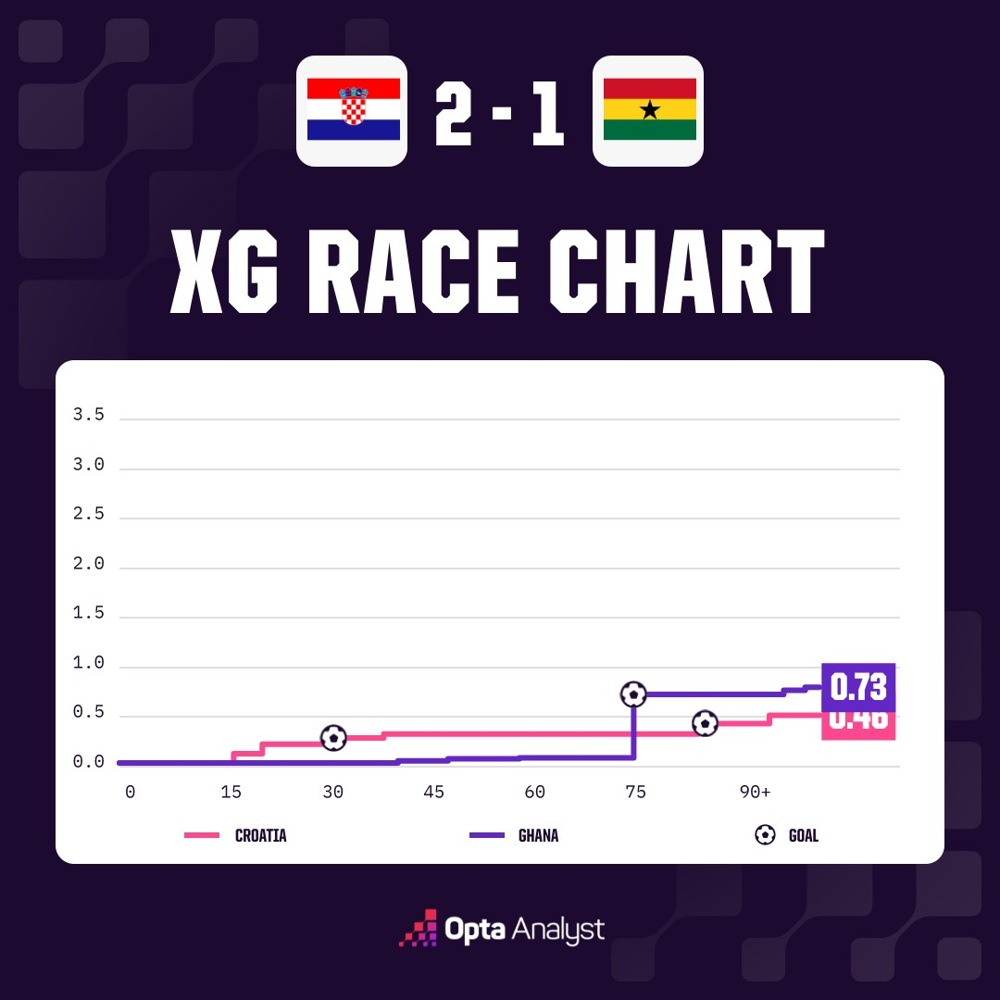
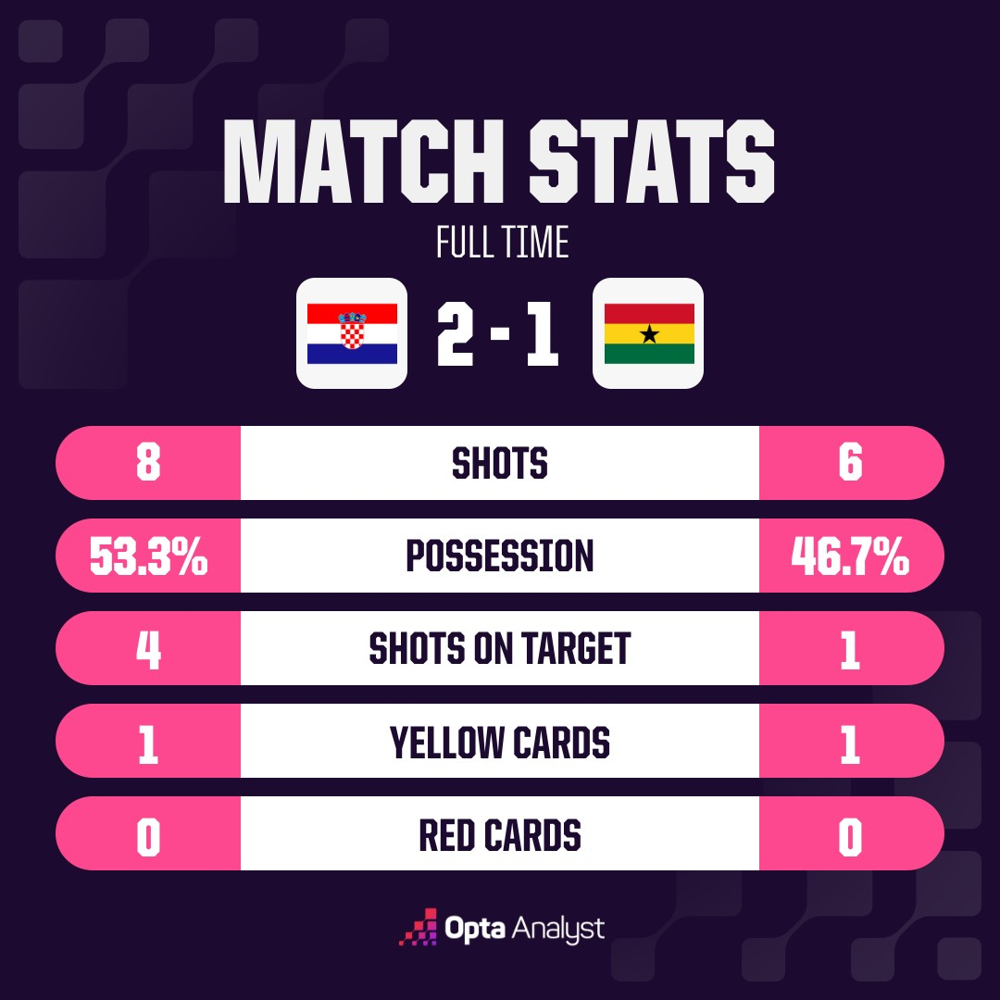
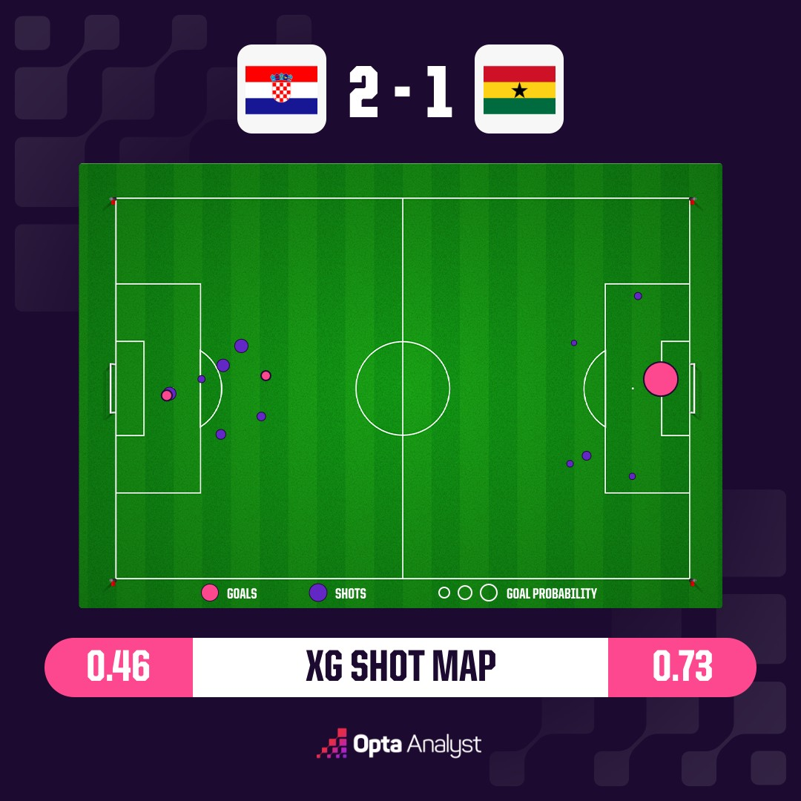
90+8'
Croatia WIN! It’s all over at Philadelphia Stadium, with Croatia coming out on top 2-1 over Ghana, thanks to goals from Petar Sučić and Nikola Vlašić.
90+7'
No luck! Abdul Fatawu takes on a shot that, had they got it right, might have been set to test the goalkeeper, but instead it is sent off target and Croatia come away unscathed.
90+6'
Still behind, but Ghana are refusing to roll over - defensive urgency rising as they fend off more pressure and push for a late turnaround.
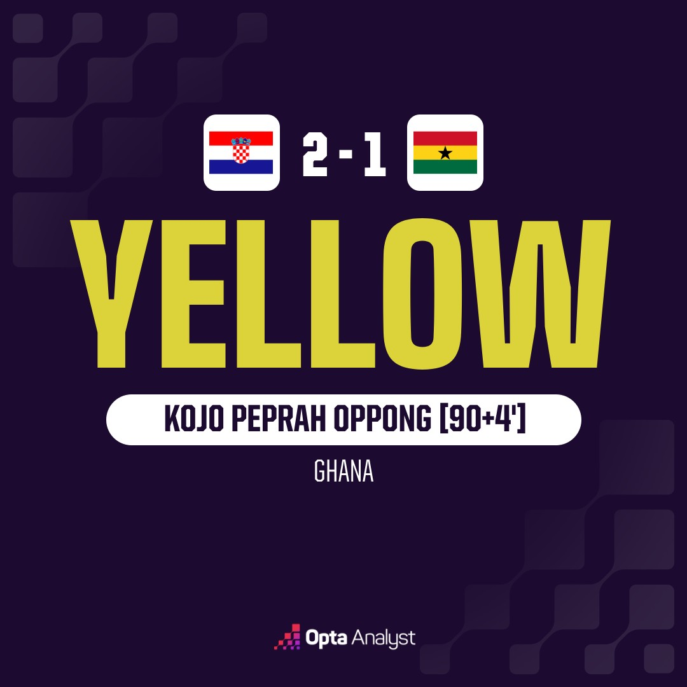
90+4'
The referee goes to their pocket and pulls out a yellow card, which is brandished in the direction of Kojo Peprah Oppong. Will they be able to avoid a second booking?
90+4'
A rash challenge from Kojo Peprah Oppong, who sends Igor Matanović tumbling, giving Croatia a free-kick. It is not in a threatening position, but it gives them a chance to get back on the ball.
90+4'
That might have been going in! A fantastic block from Luka Modrić, who gets in the way of a goal-bound effort from Marvin Senaya. Would the goalkeeper have been beaten? We will never know.
90+4'
It’s backs to the wall now — Croatia throwing everything into defending their advantage, with a flurry of crucial interventions.
90+2'
Shot blocked! Mario Pašalić unleashes an attempt at goal, but the ball does not reach its target thanks to Caleb Yirenkyi, who makes a solid block to stem the danger – for now.
90+2'
A foul from Marin Pongračić on Brandon Thomas-Asante sees Ghana win a free-kick, but it is not in a dangerous position, so Croatia should be confident they can defend it easily enough.
90+1'
Foul! A free-kick now in a dangerous area for Croatia, after Josko Gvardiol is fouled by Marvin Senaya. Can Croatia make the most of this opportunity?
90+1'
Caleb Yirenkyi goes in on Petar Sučić and concedes a foul. The free-kick is not in a particularly dangerous area from Ghana’s viewpoint, though.
90+1'
A lapse in concentration from Antoine Semenyo, as they stray offside and bring to an end what was a promising move for Ghana, who are pushing hard for the goal they so desperately want.
89'
Offside! Igor Matanović thought they were through on goal, but the Ghana defence stepped up in time to catch them offside, and the assistant referee puts their flag up.
88'
Croatia are making a tactical change. Martin Baturina is leaving the field and in their place comes Marco Pašalić – we will soon see if this switch has the desired impact.
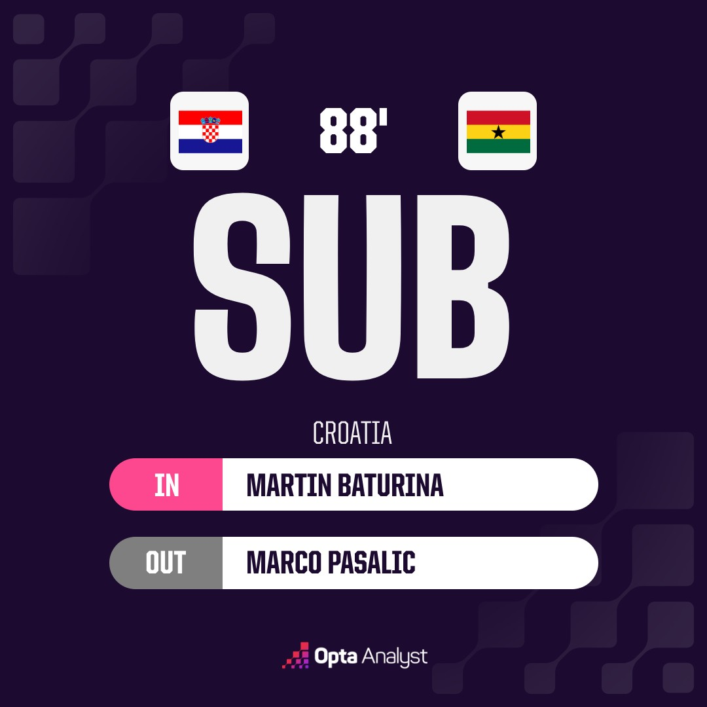
88'
A substitution for Croatia sees Nikola Vlašić replaced by Josko Gvardiol. There does not appear to be any obvious sign of an injury, so that is a tactical switch.
85'
A substitution for Ghana sees Kwasi Sibo replaced by Caleb Yirenkyi. There does not appear to be any obvious sign of an injury, so that is a tactical switch.
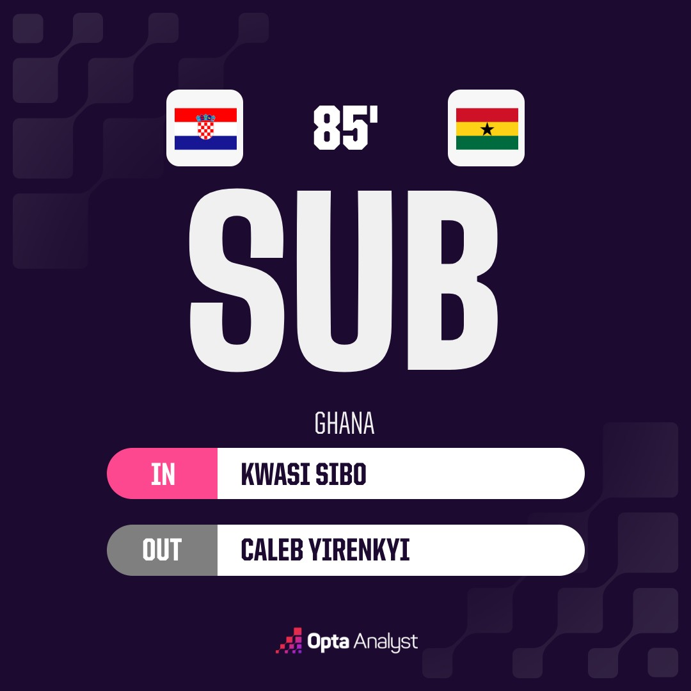
84'
A foul from Kwasi Sibo on Igor Matanović sees Croatia win a free-kick, but it is not in a dangerous position, so Ghana should be confident they can defend it easily enough.
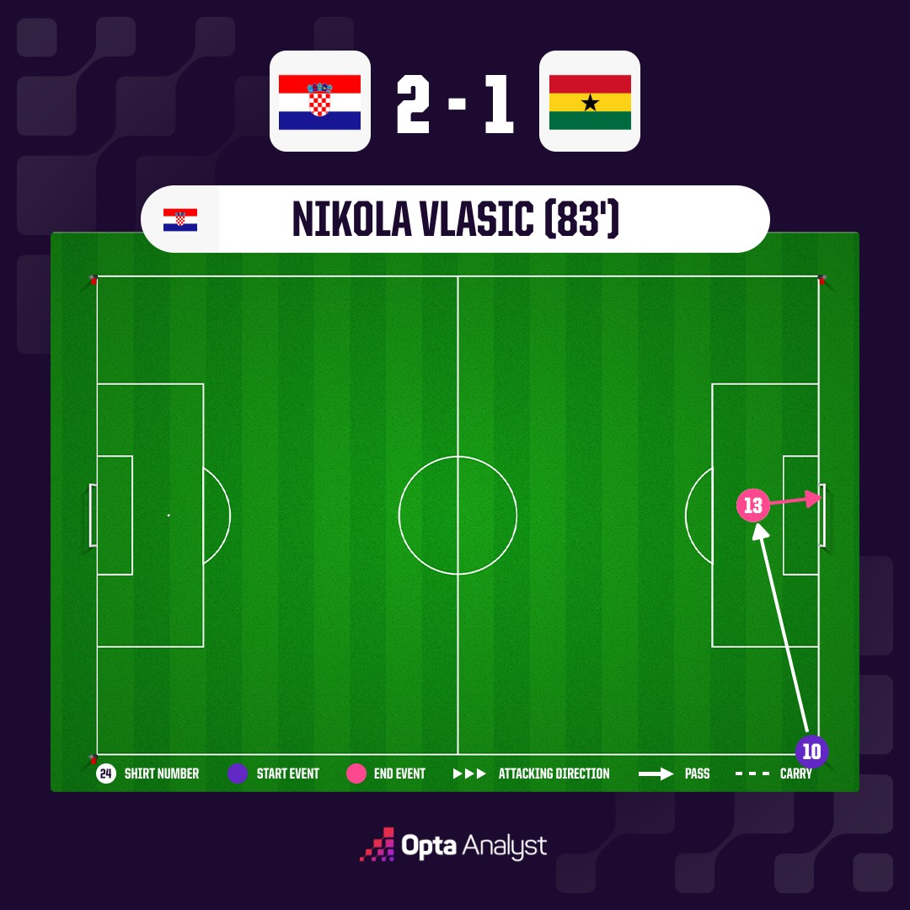
83'
Luka Modrić has assisted his first goal in the 2026 FIFA World Cup.
83'
GOAL! What a moment for Nikola Vlašić, who has found the back of the net from inside the 18-yard box to put Croatia ahead in the closing stages. Will that be enough for Croatia to claim the victory?
83'
Nikola Vlašić has scored his first goal in the 2026 FIFA World Cup.
82'
CORNER! The pressure is building for Croatia as they win a set-piece after Mario Pašalić's attempt is blocked by Benjamin Asare and diverted out of play.
81'
Free-kick! A foul from Martin Baturina on Marvin Senaya. It is well away from Croatia’s goal, so it is unlikely to result in a chance for Ghana.
80'
A foul from Nikola Vlašić on Abdul Fatawu sees Ghana win a free-kick, but it is not in a dangerous position, so Croatia should be confident they can defend it easily enough.
78'
Substitution! Mario Pašalić replaces Mateo Kovačić for Croatia as the manager shuffles the pack. Can Mario Pašalić make an impression as this match continues?
76'
VAR overturns the decision! The video official sees enough reason for the original call to be overturned, and so elects to intervene here.
76'
This decision may not stand, as it is going to VAR. The referee has stopped the play while his video assistant reviews the incident.

73'
Ernest Nuamah has assisted his first goal in the 2026 FIFA World Cup.
73'
Derrick Luckassen has scored his first goal in the 2026 FIFA World Cup.
73'
GOAL! Derrick Luckassen scores from inside the penalty area and it’s all level between Ghana and Croatia. All to play for now, can either side go on and find a winner?
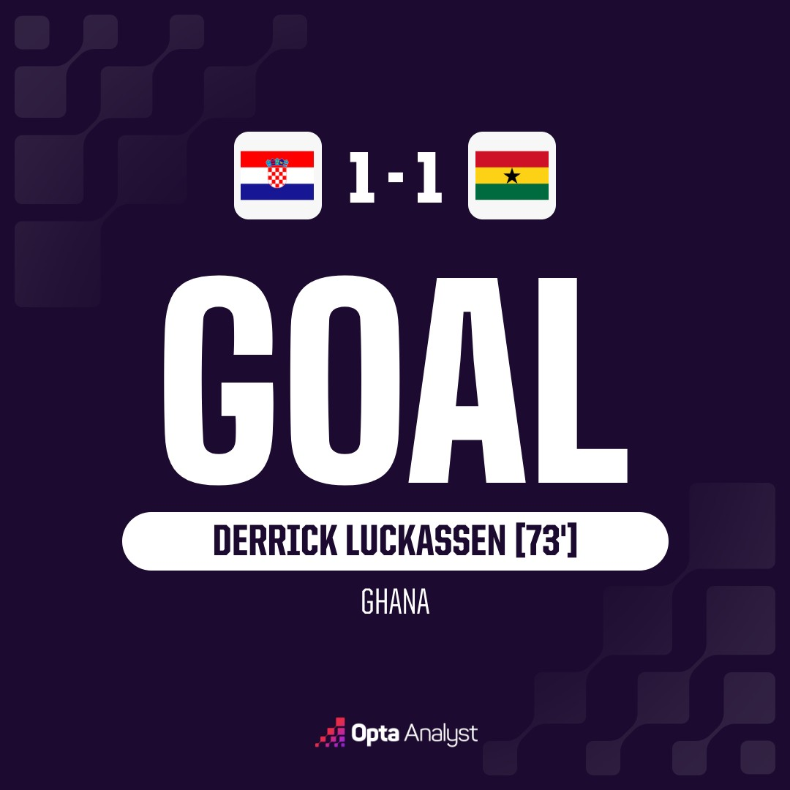
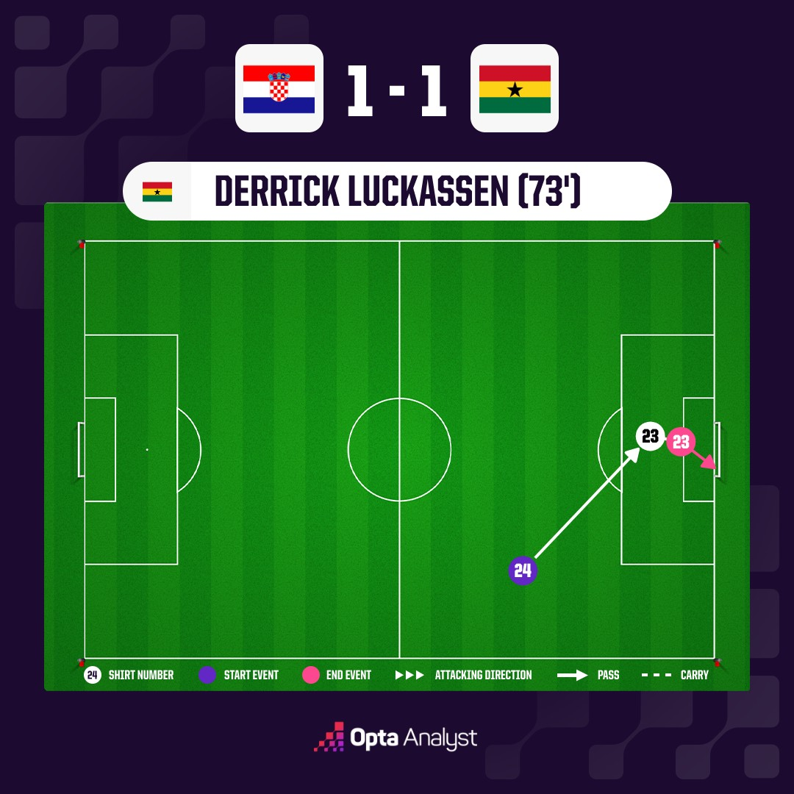
72'
A free-kick in a dangerous position now for Ghana, after a foul from Marin Pongračić on Thomas Partey. Can Ghana make Croatia pay for that rashness from Marin Pongračić?
72'
Plenty of the ball in the last quarter-of-an-hour of this match for Croatia, but Ghana have been able to hold them off with ease, with Croatia having failed to even muster a shot at goal.
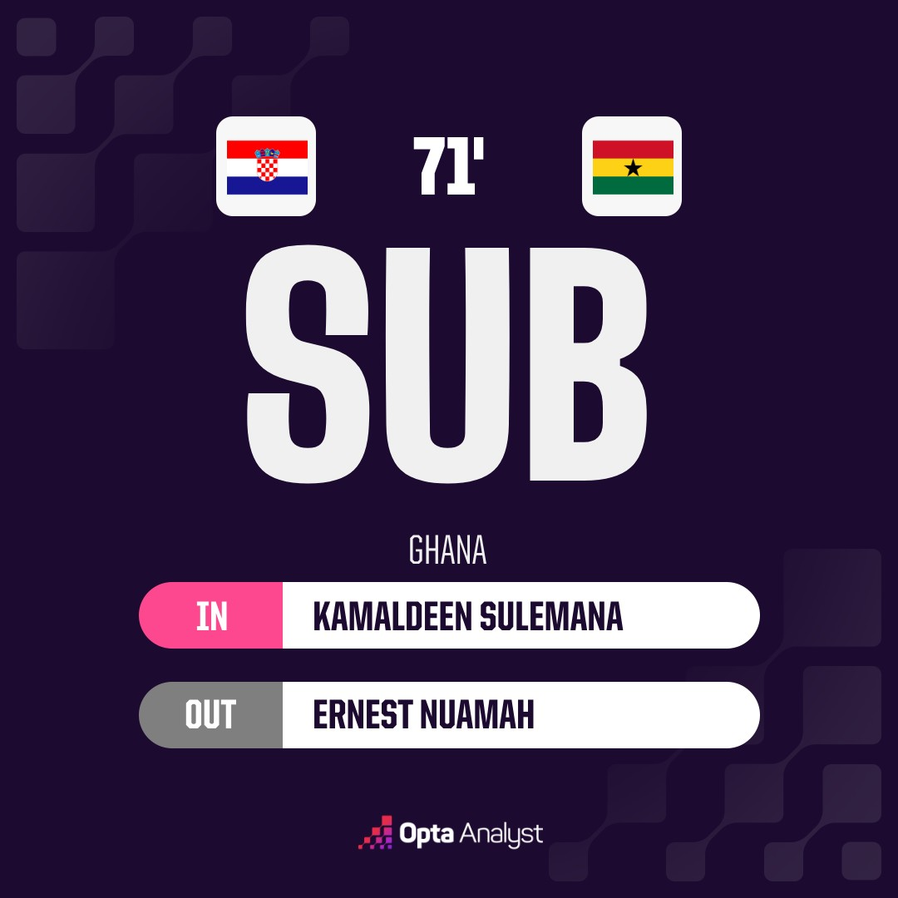
71'
Substitution! Ernest Nuamah replaces Kamaldeen Sulemana for Ghana as the manager shuffles the pack. Can Ernest Nuamah make an impression as this match continues?
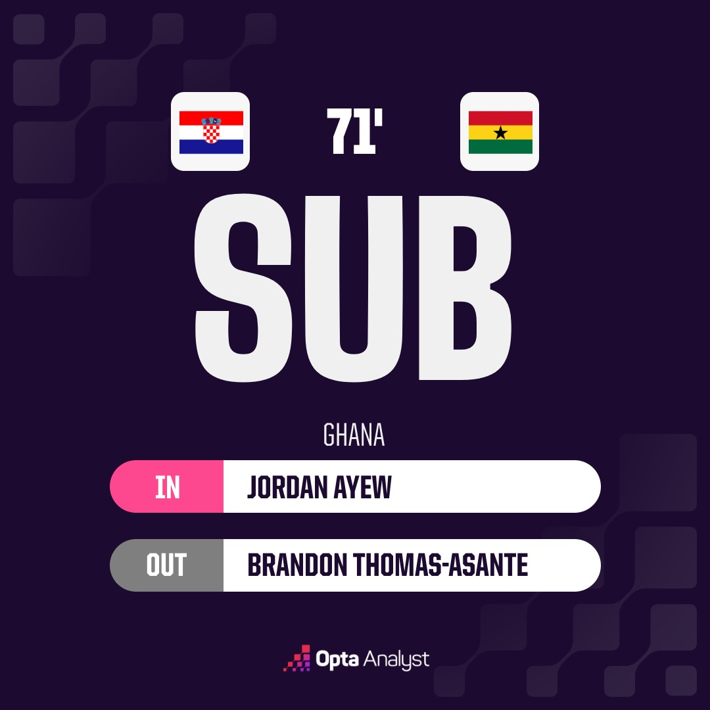
71'
Substitution! Brandon Thomas-Asante replaces Jordan Ayew for Ghana as the manager shuffles the pack. Can Brandon Thomas-Asante make an impression as this match continues?
68'
The referee goes to their pocket and pulls out a yellow card, which is brandished in the direction of Ivan Perišić. Will they be able to avoid a second booking?
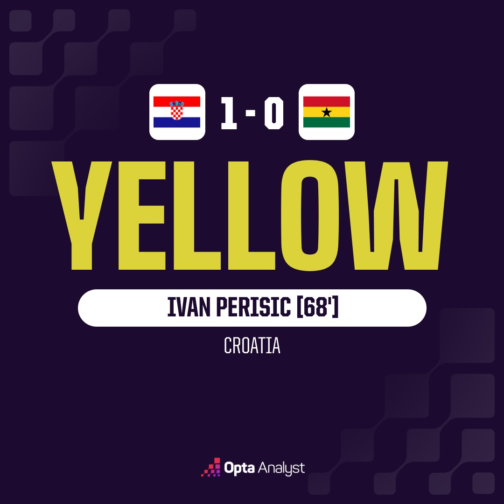
68'
It has been 30 minutes since Croatia last attempted a shot in this game.
68'
A foul from Ivan Perišić on Abdul Fatawu sees Ghana win a free-kick, but it is not in a dangerous position, so Croatia should be confident they can defend it easily enough.
67'
Not much goalmouth action to speak of in this period of the game, with no attempts made from either side. This game could spark at any moment, however. It is Croatia who have had more of the ball, controlling 68 per cent possession in the last 10 minutes.
66'
Croatia are making a tactical change. Ante Budimir is leaving the field and in their place comes Igor Matanović – we will soon see if this switch has the desired impact.
66'
Just over an hour played, so let’s check on the shot count for each side. Ghana have had 3, getting no on target. Croatia, meanwhile, have had 2 efforts on target, and 5 overall.
65'
A chance now for Ghana to get a good delivery into the box, after the ball is diverted behind for a corner. Ghana have been pushing for what would be a key goal, but Croatia have stood firm so far.
64'
Smart football from Croatia in this second period. They're keeping possession nicely with another patient build-up, content to manage their advantage while staying alert for counter-attacking opportunities.
59'
Jordan Ayew goes in on Dominik Livaković and concedes a foul. The free-kick is not in a particularly dangerous area from Ghana’s viewpoint, though.
57'
Shot blocked! Kamaldeen Sulemana unleashes an attempt at goal, but the ball does not reach its target thanks to Luka Modrić, who makes a solid block to stem the danger – for now.
56'
Corner! Ghana are pushing for a goal and now they have an opportunity from this set-piece.
55'
A foul from Ante Budimir on Derrick Luckassen sees Ghana win a free-kick, but it is not in a dangerous position, so Croatia should be confident they can defend it easily enough.
53'
A rash challenge from Marvin Senaya, who sends Martin Baturina tumbling, giving Croatia a free-kick. It is not in a threatening position, but it gives them a chance to get back on the ball.
53'
The Croatia defence steps up in time and there is a frustration for Antoine Semenyo, who thought they were through until the flag goes up to signal offside.
51'
Free-kick! A foul from Ante Budimir on Marvin Senaya. It is well away from Croatia’s goal, so it is unlikely to result in a chance for Ghana.
47'
That is a disappointing effort from Abdul Fatawu, who went for glory but got their attempt wrong, and the shot sailed off target. A frustrating moment for Ghana.
46'
Substitution! Kojo Peprah Oppong replaces Jonas Adjetey for Ghana as the manager shuffles the pack. Can Kojo Peprah Oppong make an impression as this match continues?
46'
A substitution for Ghana sees Elisha Owusu replaced by Abdul Fatawu. There does not appear to be any obvious sign of an injury, so that is a tactical switch.
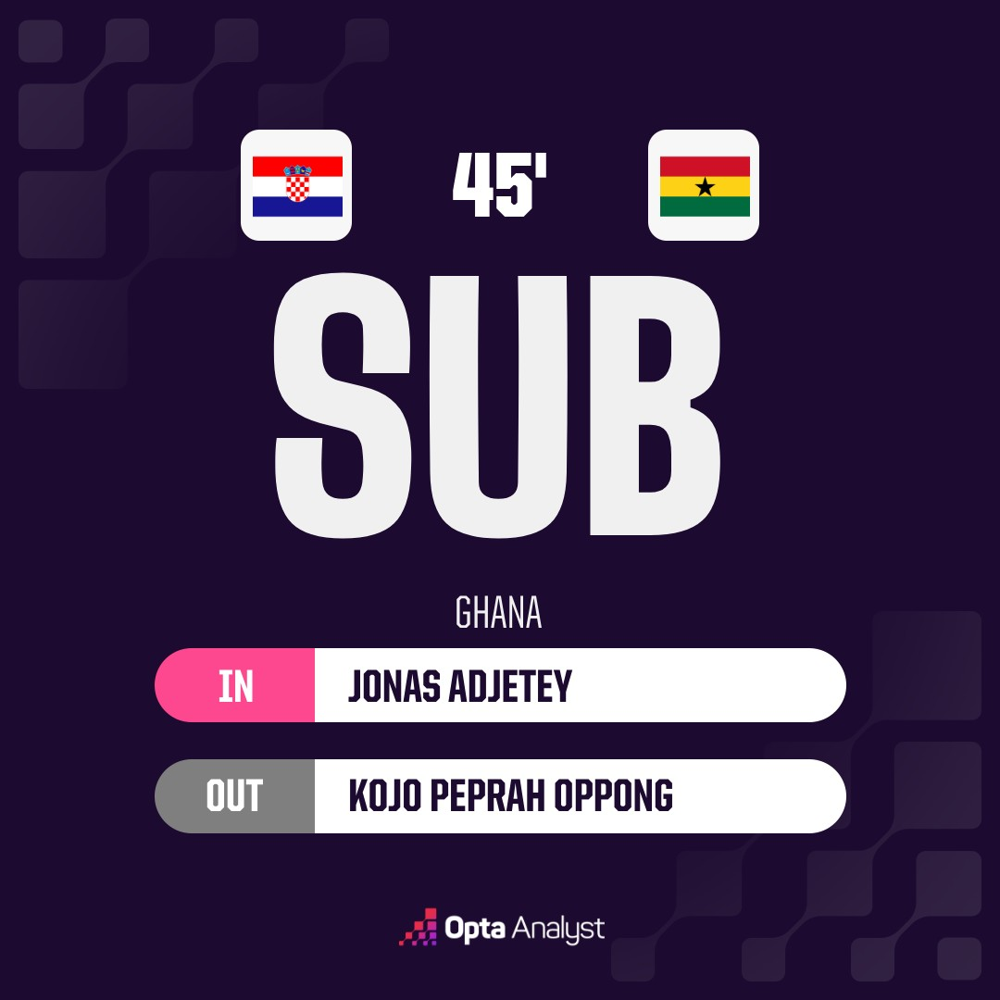
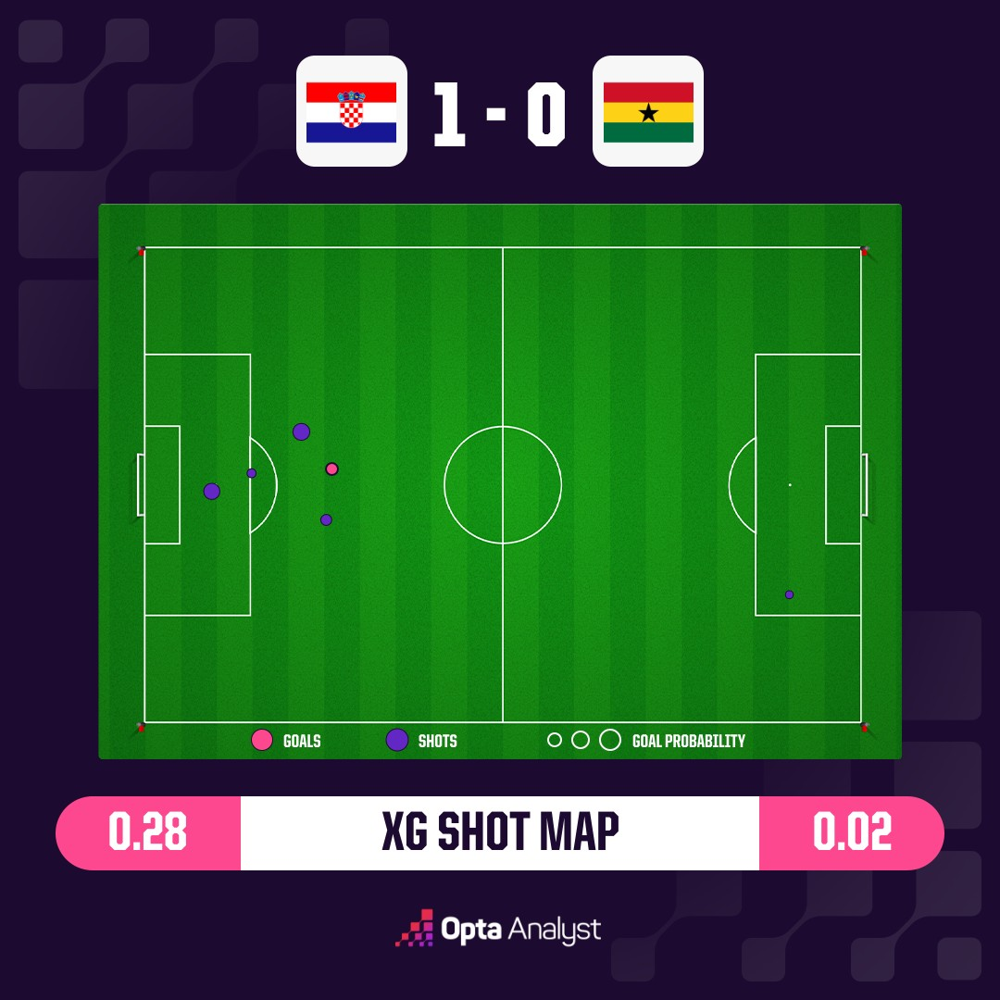
45+4'
The first half comes to a close and it’s Croatia who have the lead over Ghana at Philadelphia Stadium, with the scoreline 1-0 at the interval. Will Ghana turn this around after the break?
45+1'
This could be a chance for Croatia, after Thomas Partey fouls Petar Sučić, handing them a free-kick in a threatening area. A good set-piece from here could really test the Ghana defense!
43'
A foul from Nikola Vlašić on Gideon Mensah sees Ghana win a free-kick, but it is not in a dangerous position, so Croatia should be confident they can defend it easily enough.
41'
Ghana have not had a shot on target so far in this game.
40'
MISS! A shot from Antoine Semenyo ends up being off target. They might have done a bit better with that one, but it remains Ghana 0-1 Croatia.
39'
A smooth passage of play from Croatia, who look well on top as half-time approaches.
38'
BLOCKED! That was close. Mateo Kovačić got off a shot, which was heading in, but Elisha Owusu was on hand to make a vital intervention. Great block!
38'
Despite trailing, Ghana are showing real defensive grit, digging in and stopping further damage as they try to build a platform.
35'
Kwasi Sibo goes in on Martin Baturina and concedes a foul. The free-kick is not in a particularly dangerous area from Ghana’s viewpoint, though.
34'
Great defending from Croatia, who are staying organised and winning key battles to preserve their lead.
31'
Mateo Kovačić has assisted his first goal in the 2026 FIFA World Cup.
31'
Croatia have avoided defeat in their last 6 matches when scoring first in the FIFA World Cup, since a 1-3 loss to Brazil on 12th June 2014.
31'
Petar Sučić has scored his first goal in the 2026 FIFA World Cup.
31'
GOAL! Croatia are in front! It is a strike from outside the area that has given them the lead, with Petar Sučić getting the goal. It is far from game over yet, but now Croatia have an advantage that they will try to hold onto.
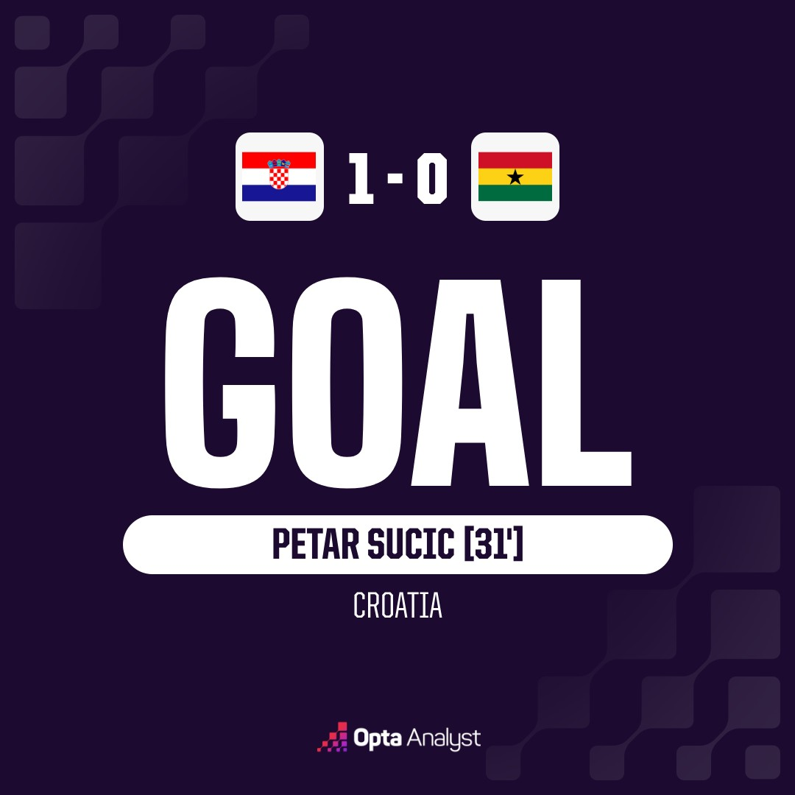
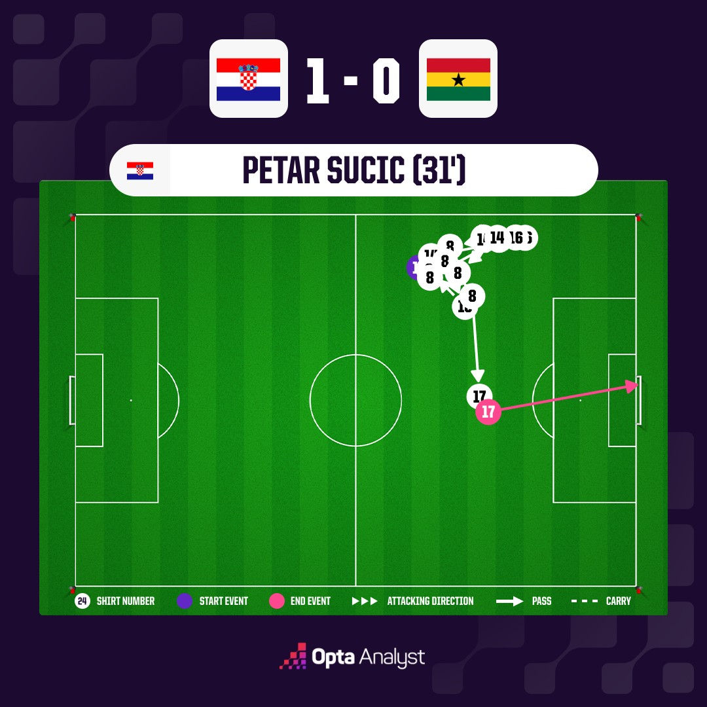
30'
CLOSE! Ivan Perišić gets into a decent shooting position inside the Ghana area, and manages to find space to get an effort off. However, Benjamin Asare is equal to it.
30'
A free-kick to Croatia, as Elisha Owusu goes in and fouls Martin Baturina. However, Ghana will not mind giving one away in this area too much, with plenty of distance to their goal.
24'
Ante Budimir goes in on Thomas Partey and concedes a foul. The free-kick is not in a particularly dangerous area from Croatia’s viewpoint, though.
21'
That is a disappointing effort from Marin Pongračić, who went for glory but got their attempt wrong, and the shot sailed off target. A frustrating moment for Croatia.
20'
Can Croatia make this chance count? They have won a free-kick in a threatening position after a foul from Kwasi Sibo on Petar Sučić. Will Ghana's defence be tested here?
11'
Neither team has had a shot in the past 10 minutes, as this match just enters something of a down period. Ghana have seen more of the ball, with 55 per cent possession, but Croatia are keeping them away from goal. There is still a chance the match will spark into life, though.
8'
A free-kick to Croatia, as Elisha Owusu goes in and fouls Martin Baturina. However, Ghana will not mind giving one away in this area too much, with plenty of distance to their goal.
4'
Kamaldeen Sulemana goes in on Petar Sučić and concedes a foul. The free-kick is not in a particularly dangerous area from Ghana’s viewpoint, though.
2'
Confident start by Croatia, knocking it around with purpose and keeping control in the opening phase.
1'
Marvin Senaya goes in on Martin Baturina and concedes a foul. The free-kick is not in a particularly dangerous area from Ghana’s viewpoint, though.
1'
Kick-off! Up and running at Philadelphia Stadium, with Croatia getting the ball rolling. Who will come out on top?
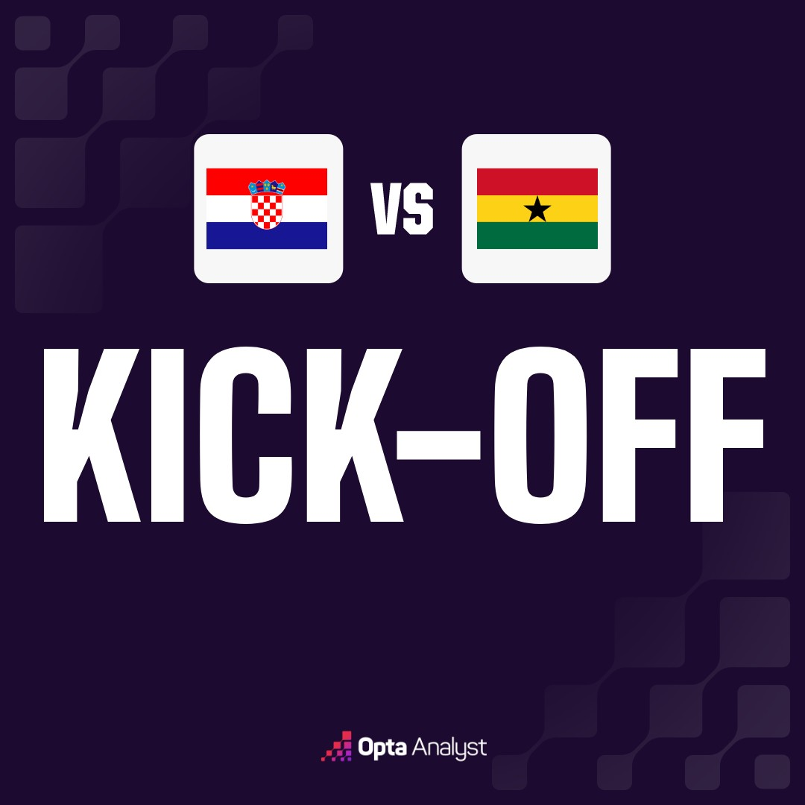
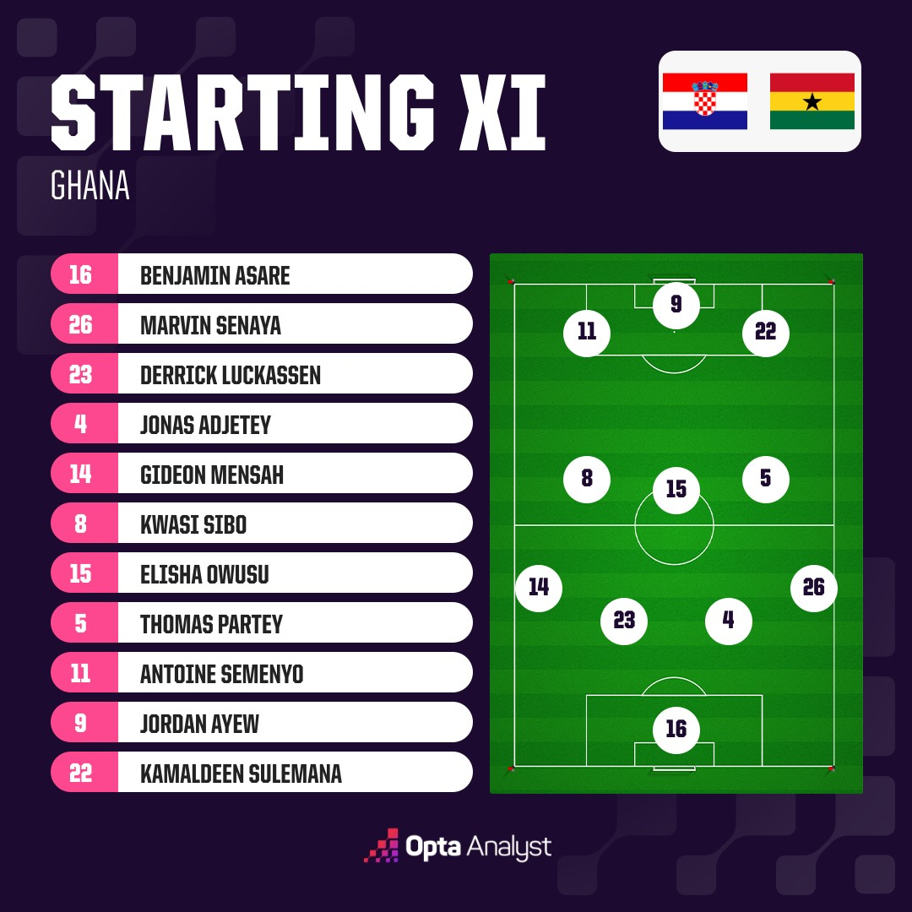
Luka Modrić is making his 22nd appearance in the FIFA World Cup.
Ivan Perišić is making his 20th appearance in the FIFA World Cup.
Mateo Kovačić is making his 18th appearance in the FIFA World Cup.
Ghana have kept a clean sheet in the last 5 matches
There have been 3 or more goals scored in total in each of Croatia's last 4 home games
Croatia play Ghana for a FIFA World Cup group stage match at Philadelphia Stadium on Saturday with Ghana looking to clinch a place in the Round of 32.
Croatia's last group stage match saw them triumph for the first time in the competition this season 1-0 over Panama on June 23. Ante Budimir was on the scoresheet in the win. In six games this year, they have three wins and three losses.
Ghana played out a 0-0 draw against England in their last game, a June 23 group stage clash at Boston Stadium, extending their unbeaten streak to three. In 2026, they have won one, drawn two, and lost three.
Ghana are second in the group on four points, while Croatia's three points place them third. Ghana are currently in line for the Round of 32, while Croatia are out of the knockout round places but still on for a place in the round of 32.
With four points, England are leading the group and are well-positioned to advance to the Round of 32. Panama are facing elimination, sitting fourth on zero points.
The trio of Martin Baturina, Petar Musa, and Budimir have provided stand-out moments for Croatia in World Cup play. They are the team's joint top scorers with one goal. Caleb Yirenkyi has been the most prolific player for Ghana, scoring once in this season's World Cup.
In their last six matches in all competitions, Croatia have won three and lost three. The Croatian side scored eight and conceded 11 in that period, scoring first in two of the six contests. They had four first-half goals, while their opponents netted five times in the first 45 minutes. Ghana have won one, drawn two and lost three in their last six. The Ghanaian side scored four and conceded 10 in that period, netting first in two of the six. All of their goals came after halftime, while their opponents netted three times before the break.
-
General
Possession 53.3% 53.34646.65446.7% Possession lost in defensive half 25 251717 Possession lost in middle third 35 354949 Duels 83 838282 Duels success rate 49.4% 49.39846.34146.3% Aerial duels 17 171717 Aerial duels won 47.1% 47.05952.94152.9% Successful dribbles 7 788 Fouls won 13 1399 Offsides 1 122 Corner awarded 3 322 -
Distribution
Passes 523 523455455 Long passes 38 383939 Long passes proportion (%) 7.3% 7.2668.5718.6% Passing accuracy 91.2% 91.20588.35288.4% Passes in opponents' half 229 229197197 Passing accuracy in opponents' half (%) 84.7% 84.71676.6576.6% Total passes in the final third 96 968282 Passing accuracy in final third (%) 78.1% 78.12554.87854.9% Forward passes 291 291273273 Forward passes (%) 55.6% 55.6416060.0% Through balls 0 011 Final third entries 49 496060 Penalty area entries 22 221010 Total open play crosses 11 1199 Crosses 15 151212 Crossing accuracy 20.0% 202525.0% -
Attack
Goals 2 211 Shots 8 866 Shots on target 4 411 Blocked shots 2 222 Headed shots 3 300 Shots outside the box 5 533 Shots inside the box 3 333 Shots accuracy excluding blocked shots 66.7% 66.6672525.0% Shooting accuracy 50.0% 5016.66716.7% Key Passes 8 866 -
Defence
Tackles 14 141313 Tackles success rate 57.1% 57.14353.84653.8% Clearances 23 231111 Interceptions 4 499 Recoveries 39 393838 Attacking third recovery 1 122 Defensive third recovery 22 222121 Midfield third recovery 16 161515 Recoveries in attacking half (%) 2.6% 2.5645.2635.3% -
Discipline
Fouls conceded 9 91313 Yellow cards 1 111 Red cards 0 000